R workshop - data visualization
Last updated: 2021-01-19
Checks: 7 0
Knit directory: 9_visualization/
This reproducible R Markdown analysis was created with workflowr (version 1.6.2). The Checks tab describes the reproducibility checks that were applied when the results were created. The Past versions tab lists the development history.
Great! Since the R Markdown file has been committed to the Git repository, you know the exact version of the code that produced these results.
Great job! The global environment was empty. Objects defined in the global environment can affect the analysis in your R Markdown file in unknown ways. For reproduciblity it’s best to always run the code in an empty environment.
The command set.seed(20210119) was run prior to running the code in the R Markdown file. Setting a seed ensures that any results that rely on randomness, e.g. subsampling or permutations, are reproducible.
Great job! Recording the operating system, R version, and package versions is critical for reproducibility.
Nice! There were no cached chunks for this analysis, so you can be confident that you successfully produced the results during this run.
Great job! Using relative paths to the files within your workflowr project makes it easier to run your code on other machines.
Great! You are using Git for version control. Tracking code development and connecting the code version to the results is critical for reproducibility.
The results in this page were generated with repository version 8229f9a. See the Past versions tab to see a history of the changes made to the R Markdown and HTML files.
Note that you need to be careful to ensure that all relevant files for the analysis have been committed to Git prior to generating the results (you can use wflow_publish or wflow_git_commit). workflowr only checks the R Markdown file, but you know if there are other scripts or data files that it depends on. Below is the status of the Git repository when the results were generated:
Ignored files:
Ignored: .Rhistory
Ignored: .Rproj.user/
Untracked files:
Untracked: code/visualization_240719.R
Untracked: data/efa_data.Rdata
Untracked: data/running_data.Rdata
Untracked: init_workflow_9visualization.R
Untracked: output/example_plot.svg
Untracked: output/figure1_histogram.tiff
Untracked: output/figure2_another_histogram.tiff
Note that any generated files, e.g. HTML, png, CSS, etc., are not included in this status report because it is ok for generated content to have uncommitted changes.
These are the previous versions of the repository in which changes were made to the R Markdown (analysis/Rworkshop_visualization.Rmd) and HTML (docs/Rworkshop_visualization.html) files. If you’ve configured a remote Git repository (see ?wflow_git_remote), click on the hyperlinks in the table below to view the files as they were in that past version.
| File | Version | Author | Date | Message |
|---|---|---|---|---|
| html | 432b629 | nicobast | 2021-01-19 | Build site. |
| Rmd | 184b033 | nicobast | 2021-01-19 | Add my first analysis |
Participants will be able to visualize their data. This implies basic visualization with fast core functions (plot, hist, boxplot), but also advanced visualization with elaborate formatting by GGPLOT2. Figures will be combined as via GRIDEXTRA and saved to a file. Opionally, we will discuss the animation of figures used for shiny apps or webpages by GGANIMATE. (by Nico Bast)
helpful resources
example graphs and code: https://www.r-graph-gallery.com/
ggplot reference: https://ggplot2.tidyverse.org/reference/index.html
setup
run this before executing the code
required packages
#check install status of required packages - install if not found
list.of.packages <- c( 'reshape2','ggplot2','gganimate', 'gridExtra')
new.packages <- list.of.packages[!(list.of.packages %in% installed.packages()[,"Package"])]
if(length(new.packages)) install.packages(new.packages)
#load required packages
suppressMessages({
require(reshape2) #data manipulation --> reshape2::melt (melting data to long format)
require(ggplot2) #advanced visualization
require(gridExtra) #combine plots
require(gganimate) #animater plots
})load data
load two objects to current environment:
data with i=948 participants (rows) and k=45 variables
group as group identifier
#read data
load('data/efa_data.Rdata')basic plots
These visualization methods are built-in with R base packages. They are very fast even with large data sets and are often applied to visualize data as checks on-the-fly (distribution, outlier, etc.).
plot
PLOT is a GENERIC function - thus object class defines applied method (see “methods(plot)”)
methods(plot) # shows different subfunctions of plot based on data class [1] plot,ANY-method plot,color-method plot.acf*
[4] plot.data.frame* plot.decomposed.ts* plot.default
[7] plot.dendrogram* plot.density* plot.ecdf
[10] plot.factor* plot.formula* plot.function
[13] plot.gganim* plot.ggplot* plot.git_repository*
[16] plot.gtable* plot.hcl_palettes* plot.hclust*
[19] plot.histogram* plot.HoltWinters* plot.isoreg*
[22] plot.lm* plot.medpolish* plot.mlm*
[25] plot.ppr* plot.prcomp* plot.princomp*
[28] plot.profile.nls* plot.R6* plot.raster*
[31] plot.spec* plot.stepfun plot.stl*
[34] plot.table* plot.trans* plot.ts
[37] plot.tskernel* plot.TukeyHSD*
see '?methods' for accessing help and source code#prepare the data
sum_score<-rowSums(data_efa,na.rm=T) #create a sum score
# -- PLOT (scatterplot, barplot, boxplot, etc.)####
plot(sum_score) #SCATTERPLOT: numeric data is plotted across id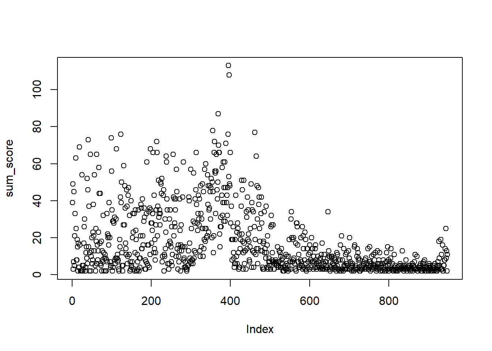
plot(group,sum_score) #plot function interprets group as numeric variable and applies a scatter plot (plot.default)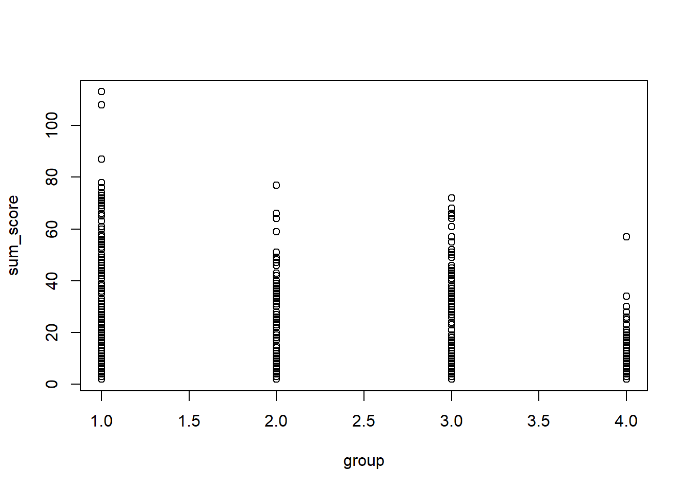
plot(as.factor(group),sum_score) #plot function interprets group as factor and applies boxplots (plot.factor)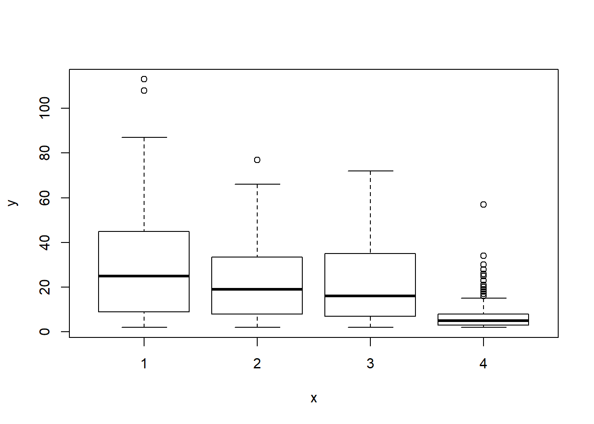
plot(as.factor(group)) # categorical data is plotted as barplot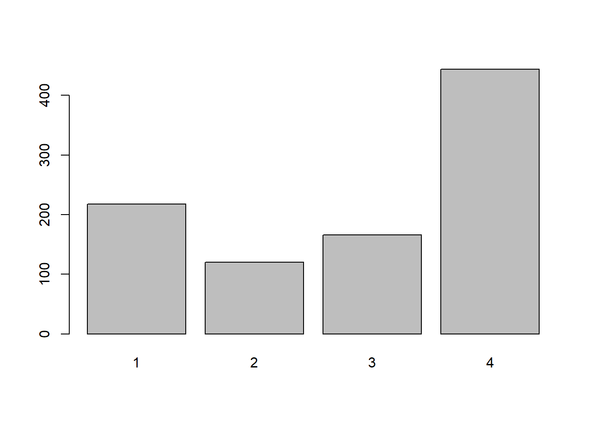
histogram
histogram function is very fast, even for large datasets. histogram of investigated variables allows a quick check whether data is suitable for analysis
hist(sum_score) #basic histogram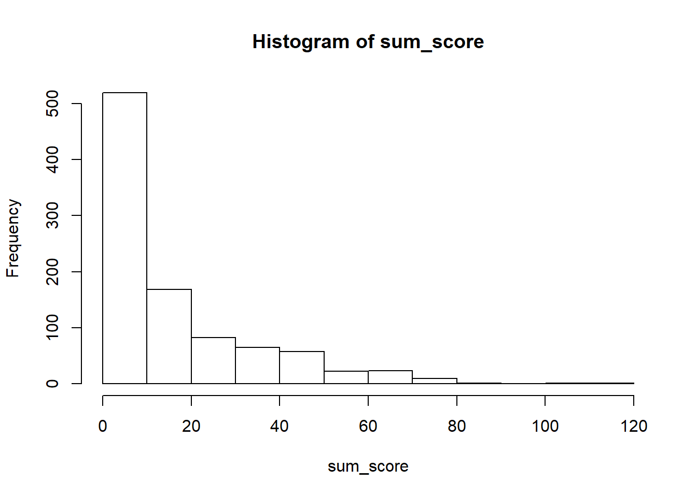
hist(sum_score,
breaks=30, #number of breaks / number of bars
col='pink') #color of bars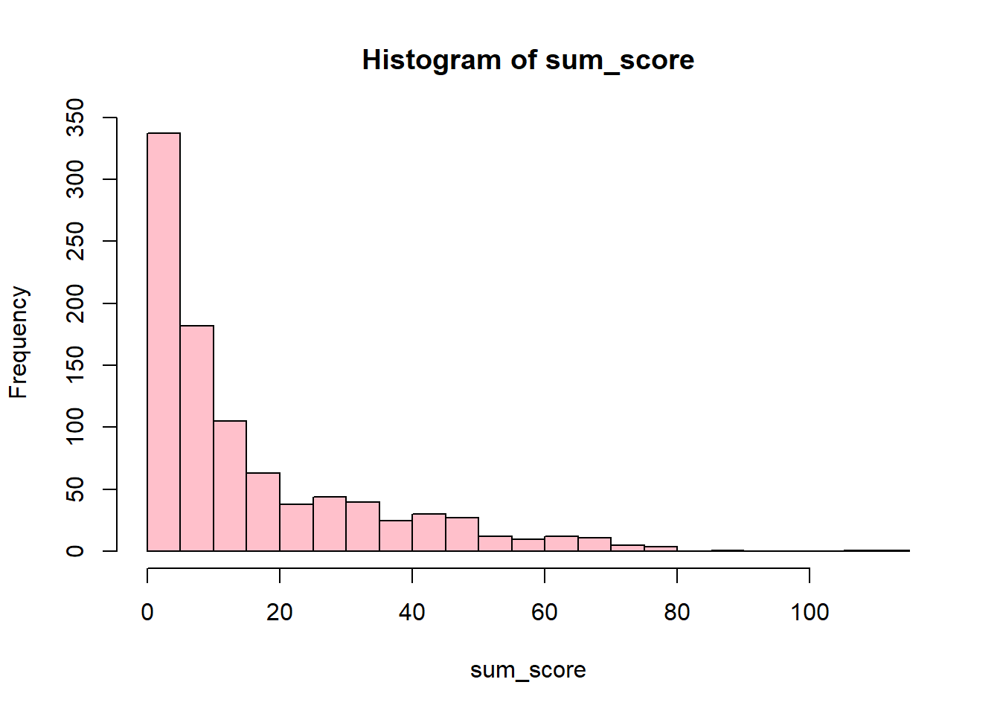
plot(density(sum_score,na.rm=T)) #density plot, similar to histogram, only useful in bigger datasets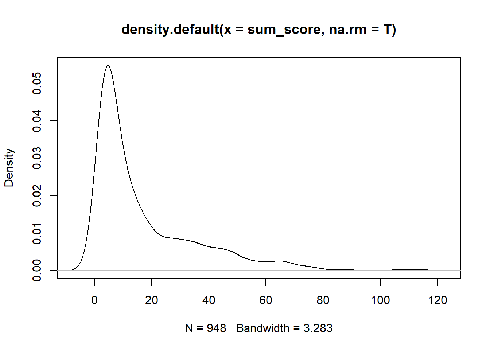
formatting
graphcial parameters can be adjusted by a call withing the function to change appearance of the plot
plot(sum_score,
col=group, #color according to group
pch=16, #point type
asp= 3/1, #ratio of y/x axes
main='Sum scores by participant',ylab = 'raw sum score') #labelling
change parameters
graphical parameters (PAR function) can be called to change parameters for the duration of the session. This allows to initialize favorite parameters in the setup chunks of the script
number of plots
# ?par # options for graphical parameters
par(mfrow=c(1,2)) #MFROW: change the graphical parameter for the number of plots to be drawn (here: one row, two columns)
##--> BE CAREFUL: PERMANENT FOR THE SESSION
plot(sum_score,col=group,cex=0.8,pch=16,ylab = 'raw sum score') #scatterplot on left side (called first)
plot(as.factor(group),sum_score,col=1:4,xaxt='n',xlab='group') #boxplot on right side with xaxis removed
#added graphical parameters in new line (will overplot current plot)
axis(1, at=1:4, labels=c('ASD','ID','MD','CG')) #add a customized axis
mtext("Scatterplot and Boxplot of Sum Score", side=3, outer=TRUE, line=-3) #add a custom label for the grit plot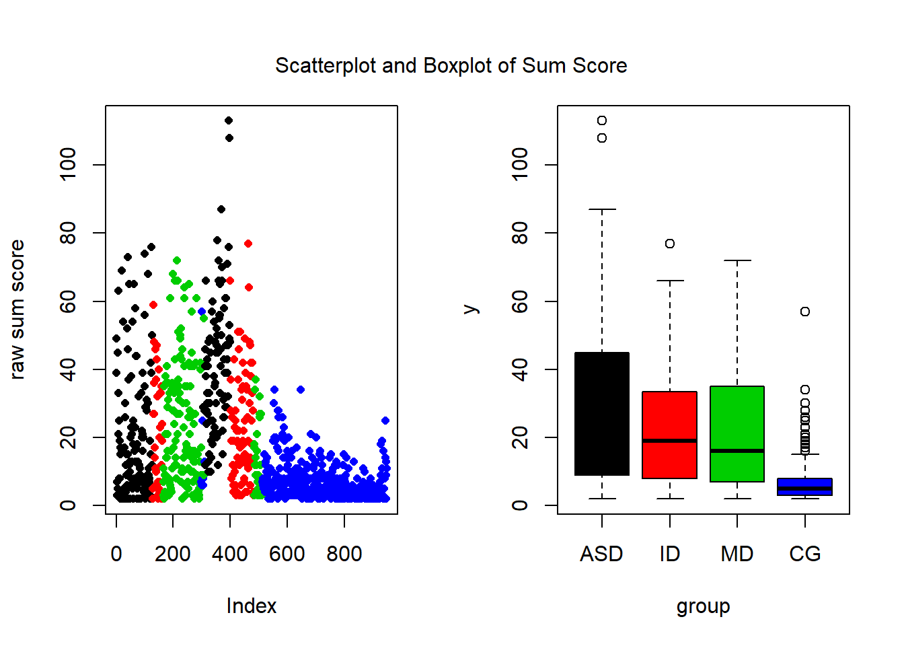
par(mfrow=c(1,1)) #reset graphical parameter color palette
palette() #displays the palette of default colors (applied to graphical parameter col)[1] "black" "red" "green3" "blue" "cyan" "magenta" "yellow"
[8] "gray" #colors() #color names that can be applied to palette
palette(c('springgreen3','tomato','turquoise','peachpuff1')) #change default palette to specific colors
plot(as.factor(group),sum_score,col=1:4,xlab='group') #boxplot with new color palette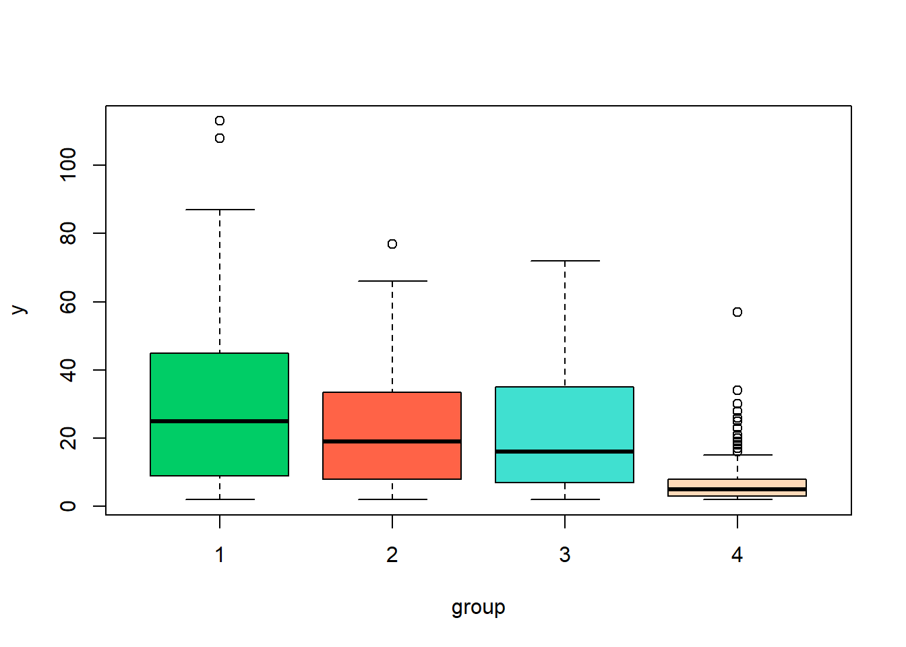
palette('default') #reset palette to defaultsave plot to file
base packages allow to save as JPEG, BMP, and TIFF file format. TIFF Format is usually requested by journals
tiff(file="output/figure1_histogram.tiff", # create a file in tiff format in current working directory
width=6, height=4, units="in", res=300) #define size and resolution of the resulting figure
hist(sum_score,breaks=30,col='pink',main='histogram of sumscore') #draw object to file (will not be shown)
dev.off() #close operation and save filepng
2 advanced plots (ggplot2)
GGPLOT = Grammar of graphics plotting. GGPLOT2 is a powerful package by Hadley Wickham with a standardized syntax to allow for elaborate plotting. There are whole books dealing with the syntax of ggplot2: https://ggplot2-book.org/index.html
basic syntax
the basic components that needed for every ggplot2 are DATA, AESTHETICS, and GEOM
DATA - data that is visualized
AESTHETICS (aes) - how the visualized data is structured (corrdinate system)
GEOM - visualization type
df.plot<-data.frame(group,sum_score) #DATA - needs to contain all variables to be plotted in one object
g<-ggplot(data=df.plot, #DATA
aes(x=as.factor(group),y=sum_score)) #AESTHETICS (defines coordinate system)
g+geom_boxplot() #GEOM (defines the type of plot) 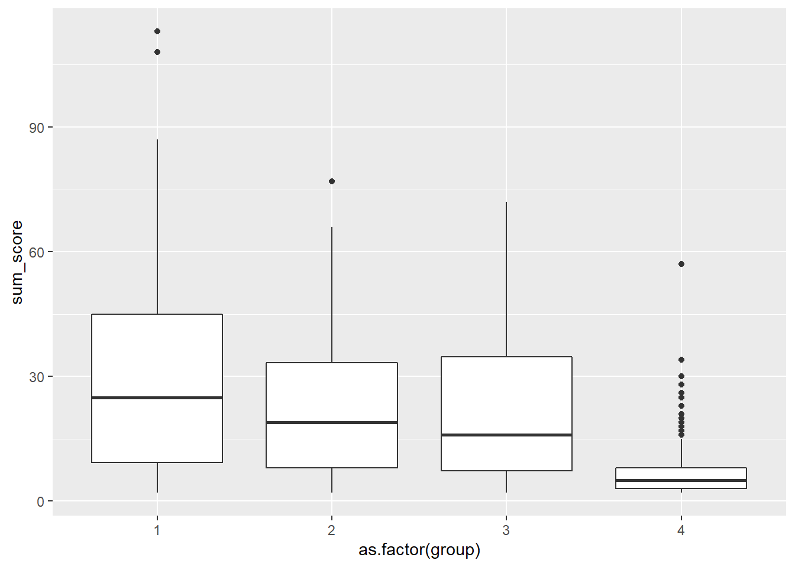
g+geom_violin() #different GEOM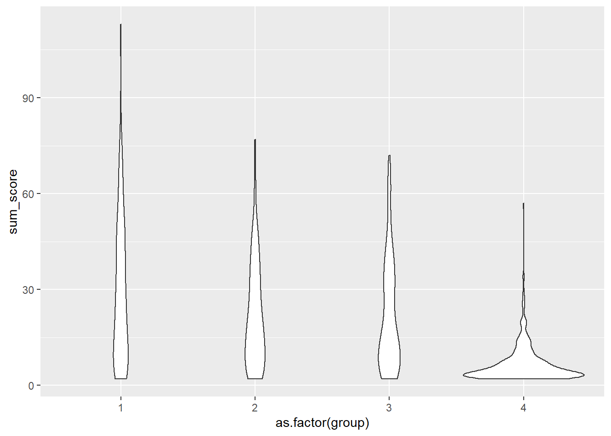
prepare the data
data (data_efa) current is in WIDE unstacked format (xlsx, SPSS standard formats) with in different column based on context. ggplot requires data to be in LONG format as stacked data with one (single) column for each variable. Other variables may specify the context of an index variable
id<-seq_len(nrow(data_efa)) #add a participant id variable (usually row number in wide data format)
data_efa<-data.frame(id,group,data_efa) #concatenate to a data.frame
df_long<-melt(data_efa, id.vars = c('id','group'), measure.vars = 3:47) #melt a wide data frame to LONG FORMAT
str(df_long) #show structure'data.frame': 42660 obs. of 4 variables:
$ id : int 1 2 3 4 5 6 7 8 9 10 ...
$ group : int 1 1 1 1 1 1 1 1 1 1 ...
$ variable: Factor w/ 45 levels "i1","i2","i3",..: 1 1 1 1 1 1 1 1 1 1 ...
$ value : num 0 1 0 0 1 0 0 0 1 0 ...aggregate data
stat_summary are a specific form of geom that transforms/aggregates the data
ggplot(data=df_long, #DATA
aes(x=variable,y=value,group=group,color=as.factor(group)))+ #AES
stat_summary(fun.data = 'mean_se') #GEOMWarning: Removed 192 rows containing non-finite values (stat_summary).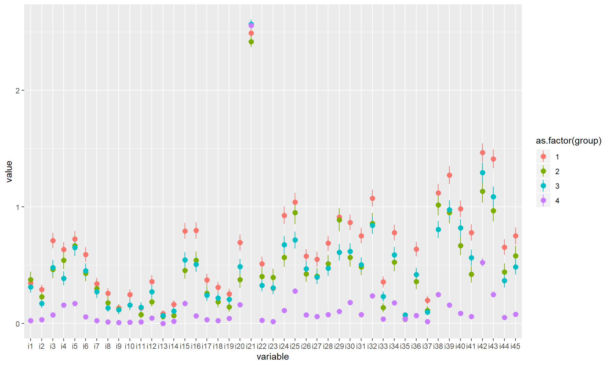
layers
load new data
load('data/running_data.Rdata')
df.running<-df.running[df.running$duration>0,] #correct for artifactsinspect data
names(df.running) [1] "start_time" "end_time" "distance"
[4] "duration" "elevation_gain" "average_speed"
[7] "calories" "max_speed" "temperature"
[10] "subjective_feeling_id" "weather_condition_id" "year.class"
[13] "month.class" "day.class" "hour.class"
[16] "ts.class" "run.date" par(mfrow=c(2,2))
with(df.running,hist(distance,breaks=30))
with(df.running,hist(elevation_gain))
with(df.running,hist(temperature))
with(df.running,plot(temperature))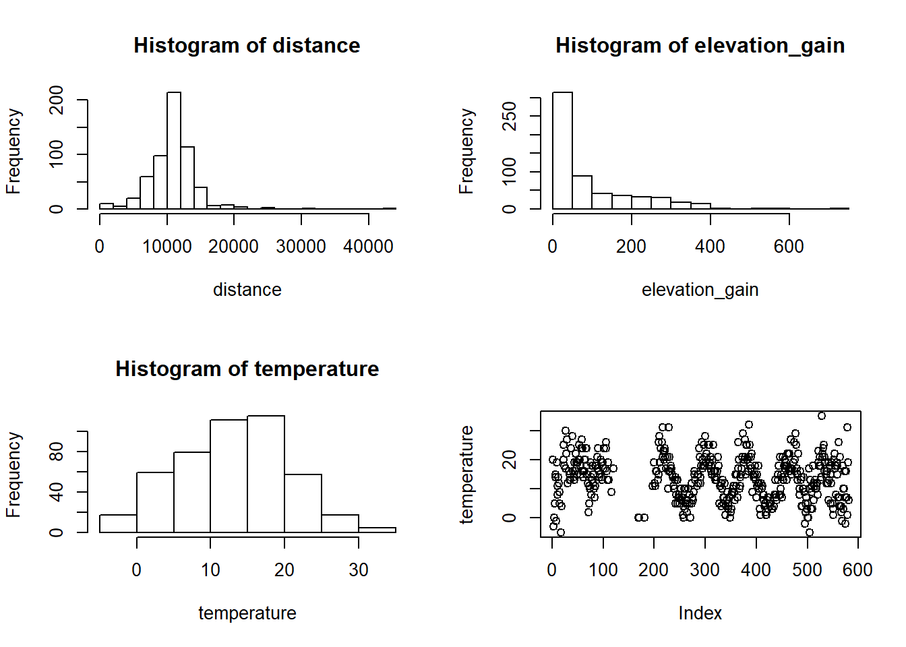
par(mfrow=c(1,1))linear model
with(df.running,summary(lm(distance~hour.class+day.class+year.class+temperature+duration))) #linear model
Call:
lm(formula = distance ~ hour.class + day.class + year.class +
temperature + duration)
Residuals:
Min 1Q Median 3Q Max
-12319.9 -357.1 167.5 542.3 4141.5
Coefficients:
Estimate Std. Error t value Pr(>|t|)
(Intercept) 2.266e+05 6.285e+04 3.605 0.000347 ***
hour.class 1.058e+01 1.497e+01 0.707 0.480017
day.class -6.401e+01 3.229e+01 -1.982 0.048068 *
year.class -1.120e+02 3.121e+01 -3.590 0.000367 ***
temperature 1.227e+01 8.445e+00 1.453 0.147015
duration 2.605e-03 4.959e-05 52.535 < 2e-16 ***
---
Signif. codes: 0 '***' 0.001 '**' 0.01 '*' 0.05 '.' 0.1 ' ' 1
Residual standard error: 1268 on 454 degrees of freedom
(121 observations deleted due to missingness)
Multiple R-squared: 0.8642, Adjusted R-squared: 0.8627
F-statistic: 578 on 5 and 454 DF, p-value: < 2.2e-16multiple layers
Different geoms can be combined in one plot. Question: How did running distance develop over the years?
#DEFINE BASIC PLOT (DATA, AESTHETICS)
g<-ggplot(df.running[order(df.running$run.date),],aes(x=run.date,y=distance/1000))
#ADD ADDITIONAL COMPONENTS:
g+geom_point(alpha=0.5)+ #GEOM: point
geom_boxplot(aes(group=year.class),color='orange',fill='wheat')+ #GEOM: boxplot
geom_smooth(method='loess',color='navy',fill='blue')+ #GEOM: smoothed line - general additive model
labs(x=NULL,y='running distance (km)',title='Running distance over the years')+ #LABELS
theme_bw()+ #THEME - add a predefined overall appearance
ylim(0,20) #ADDITIONAL GRAPHICAL PARAMETERS - here, limit y-axis to values between 0 and 20Warning: Removed 8 rows containing non-finite values (stat_boxplot).Warning: Removed 8 rows containing non-finite values (stat_smooth).Warning: Removed 8 rows containing missing values (geom_point).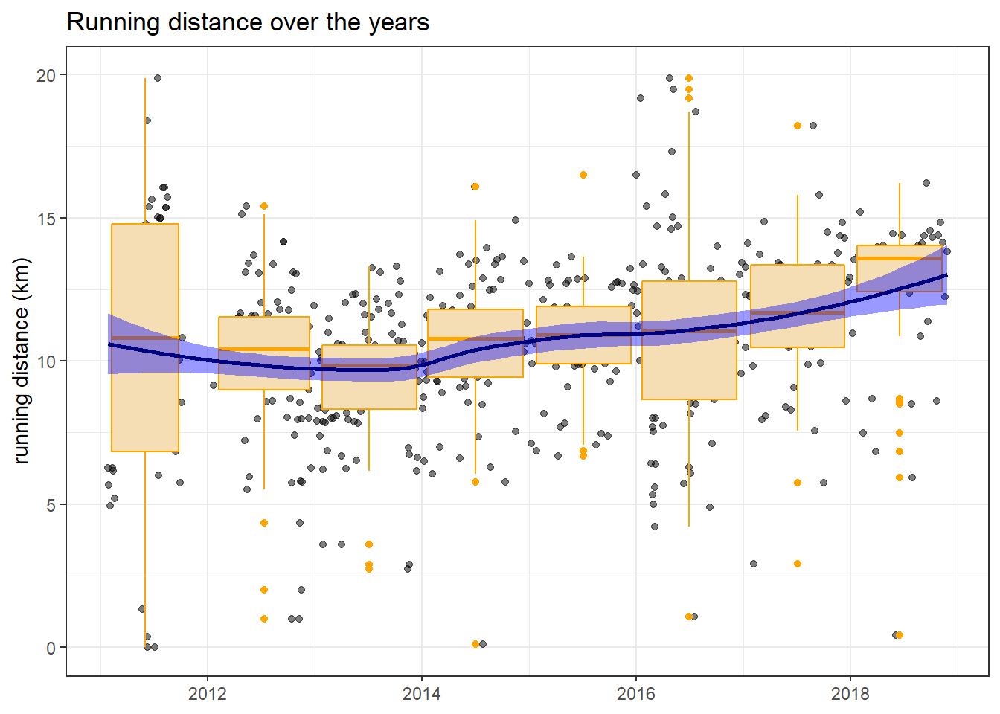
facets
Facets allow to draw multiple plots based on grouping variable. Question: Is running distance affected by weekdays and years?
g<-ggplot(df.running,aes(x=as.factor(day.class),y=distance/1000))
g+geom_violin(fill='lightblue')+ #GEOM
labs(x='weekdays',y='running distance (km)',title='Running distance across weeksdays and years')+ #LABELS
theme_bw()+ #THEME
ylim(0,20)+ #ADDITIONAL PARAMETERS (limit y-axis)
scale_x_discrete(labels=c('Mo','Tu','We','Th','Fr','Sa','Su'))+ #ADDITIONAL PARAMETERS (relabel x axis)
facet_wrap(~year.class) #FACETS: wrap (one dimensional variable)Warning: Removed 8 rows containing non-finite values (stat_ydensity).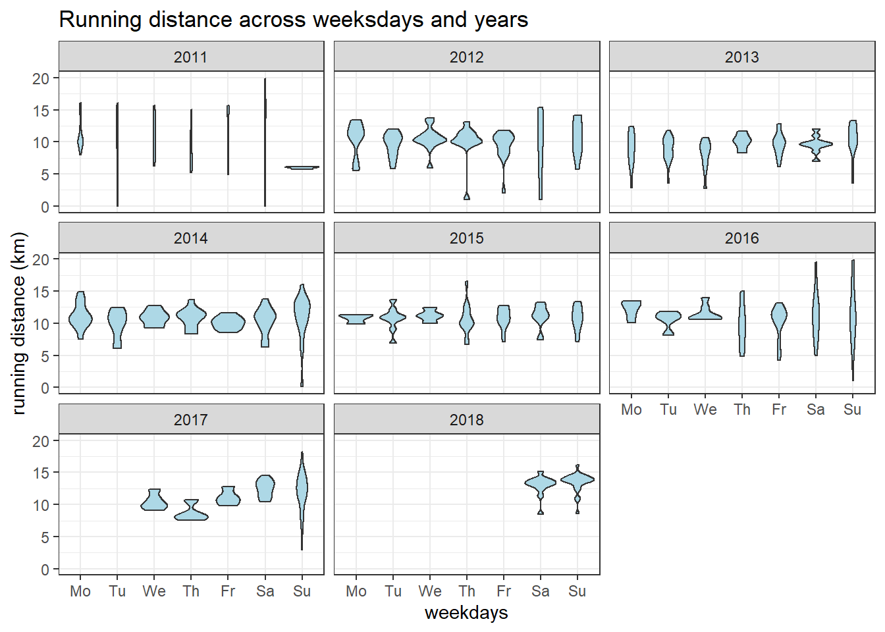
g<-ggplot(df.running,aes(x=distance/1000))
g+geom_histogram(bins=20)+
xlim(0,20)+
facet_grid(day.class~year.class) #FACETS: grid (two dimensional variables)Warning: Removed 8 rows containing non-finite values (stat_bin).Warning: Removed 106 rows containing missing values (geom_bar).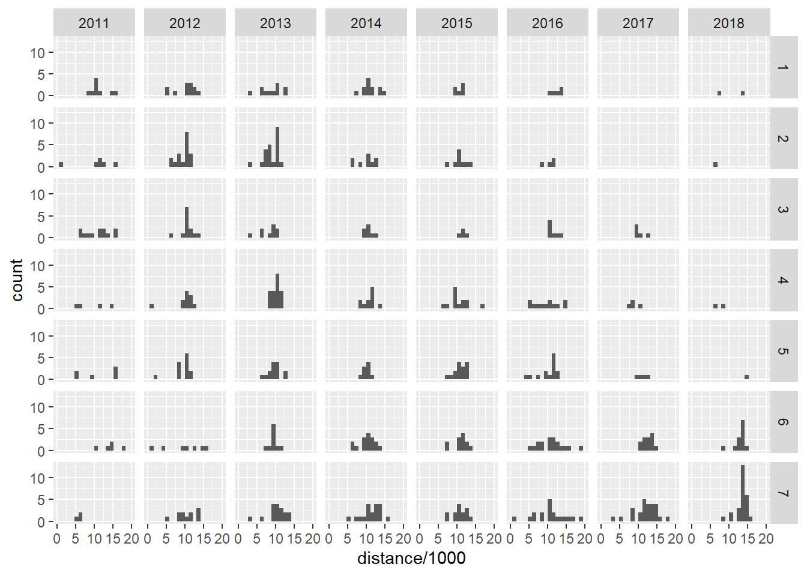
annotation
plots can be extended by annotations that enrich the plot with additional data that is not part of the drawn dataset
g<-ggplot(df.running,aes(x=calories))
g+geom_histogram(color='blue',fill='violet')+
annotate('rect',xmin=1500,xmax=3100,ymin=-10,ymax=10,alpha=0.4,fill='orange')+
annotate('text',x=2200,y=20,label="longer runs",color='orange')+
annotate('text',x=1500,y=130,label=paste('Running burns calories! \n median:',median(df.running$calories),'kcal'),
cex=6,color='blue')+
geom_vline(xintercept = median(df.running$calories),cex=2,col='blue') +
geom_hline(yintercept = 100, lty=2) +
theme_bw()`stat_bin()` using `bins = 30`. Pick better value with `binwidth`.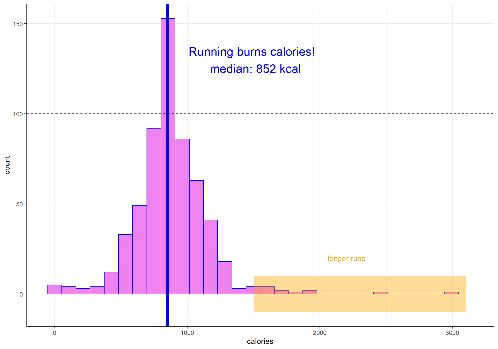
save to file
R can save plots in common graphics formats (personally prefer tiff: high quality, reasonable size)
#create a TIFF FILE in specified path
tiff(filename = "output/figure2_another_histogram.tiff",
width = 6, height = 3, units = "in", pointsize = 12, res=300, compression="lzw") #define dimensions
#DRAW object to be saved
g<-ggplot(df.running,aes(x=distance))
g+geom_histogram(aes(y=..density..),fill='royalblue4',color='lightblue')+
stat_function(fun = dnorm, args = with(df.running, c(mean = mean(distance), sd = sd(distance))))+ #STAT_FUNCTION (applies function to all x values)
labs(x='distance (m)',title='Running distance of the last 7 years')+
theme_minimal()`stat_bin()` using `bins = 30`. Pick better value with `binwidth`. #figure is SAVED to specified graphics file
dev.off()png
2 multiple plots (grid.arrange)
It may often be useful to combine plots in one figure: https://cran.r-project.org/web/packages/gridExtra/vignettes/arrangeGrob.html
g1<-ggplot(df.running,aes(x=calories))+
geom_histogram(color='blue',fill='violet')+
annotate('rect',xmin=1500,xmax=3100,ymin=-10,ymax=10,alpha=0.4,fill='orange')+
annotate('text',x=2200,y=20,label="longer runs",color='orange')+
annotate('text',x=1500,y=130,label=paste('Running burns calories! \n median:',median(df.running$calories),'kcal'),
cex=6,color='blue')+
geom_vline(xintercept = median(df.running$calories),cex=2,col='blue') +
geom_hline(yintercept = 100, lty=2) +
theme_bw()
g2<-ggplot(df.running[order(df.running$run.date),],aes(x=run.date,y=distance/1000))+
geom_point(alpha=0.5)+ #GEOM: point
geom_boxplot(aes(group=year.class),color='orange',fill='wheat')+ #GEOM: boxplot
geom_smooth(method='loess',color='navy',fill='blue')+ #GEOM: smoothed line - general additive model
labs(x=NULL,y='running distance (km)',title='Running distance over the years')+ #LABELS
theme_bw()+ #THEME - add a predefined overall appearance
ylim(0,20) #ADDITIONAL GRAPHICAL PARAMETERS - here, limit y-axis to values between 0 and 20
grid.arrange(g1,g2,
ncol=2, widths=2:1,
top = "Main Title")`stat_bin()` using `bins = 30`. Pick better value with `binwidth`.Warning: Removed 8 rows containing non-finite values (stat_boxplot).Warning: Removed 8 rows containing non-finite values (stat_smooth).Warning: Removed 8 rows containing missing values (geom_point).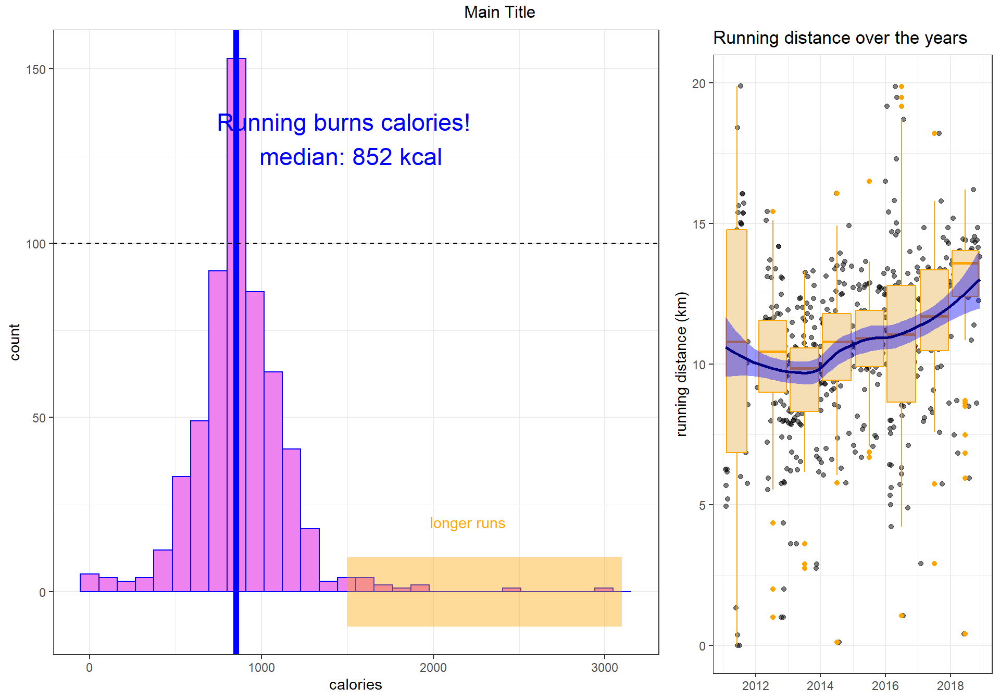
sessionInfo()R version 3.6.1 (2019-07-05)
Platform: x86_64-w64-mingw32/x64 (64-bit)
Running under: Windows 10 x64 (build 19041)
Matrix products: default
locale:
[1] LC_COLLATE=German_Germany.1252 LC_CTYPE=German_Germany.1252
[3] LC_MONETARY=German_Germany.1252 LC_NUMERIC=C
[5] LC_TIME=German_Germany.1252
attached base packages:
[1] stats graphics grDevices utils datasets methods base
other attached packages:
[1] gganimate_1.0.4 gridExtra_2.3 ggplot2_3.2.1 reshape2_1.4.3
[5] workflowr_1.6.2
loaded via a namespace (and not attached):
[1] Rcpp_1.0.3 compiler_3.6.1 pillar_1.4.3 later_1.0.0
[5] git2r_0.26.1 plyr_1.8.5 prettyunits_1.1.0 progress_1.2.2
[9] tools_3.6.1 digest_0.6.23 evaluate_0.14 lifecycle_0.2.0
[13] tibble_3.0.4 gtable_0.3.0 png_0.1-7 pkgconfig_2.0.3
[17] rlang_0.4.8 yaml_2.2.0 xfun_0.11 withr_2.1.2
[21] stringr_1.4.0 dplyr_1.0.2 knitr_1.26 hms_0.5.3
[25] generics_0.0.2 fs_1.3.1 vctrs_0.3.4 tidyselect_1.1.0
[29] rprojroot_1.3-2 grid_3.6.1 glue_1.4.2 R6_2.4.1
[33] gifski_0.8.6 rmarkdown_2.0 farver_2.0.1 tweenr_1.0.1
[37] purrr_0.3.3 magrittr_1.5 whisker_0.4 backports_1.1.5
[41] scales_1.1.0 promises_1.1.0 htmltools_0.4.0 ellipsis_0.3.0
[45] colorspace_1.4-1 httpuv_1.5.2 labeling_0.3 stringi_1.4.5
[49] lazyeval_0.2.2 munsell_0.5.0 crayon_1.3.4